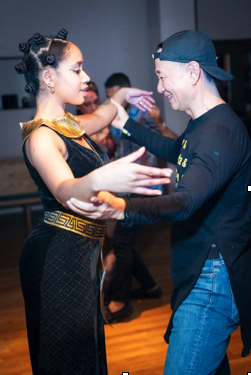
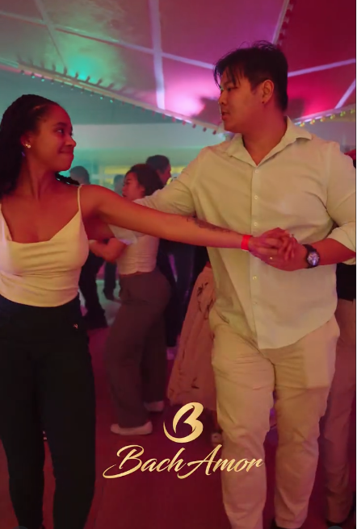

A Brief History of Bachata
Roots, Evolution, and Global Reach
As a professional Latin Dance instructor, it is important that I know the history of the dances I teach. This includes its roots, how it has evolved, and where it stands today.
Humble Beginnings in the Dominican Republic
Bachata originated in the Dominican Republic as a dance strictly for poor people. Those who were sophisticated danced the nationally adopted dance of Merengue. Things were this way for a while until the assassination of Trujillo, the leader of the DR at the time.

After this, more Dominicans felt comfortable enough to move to the city and this is when Bachata started to spread, slowly but surely. It was still seen as a dance for the poor people, especially since the only places that citizens would get to dance Bachata were in the equivalent of today’s brothels.
Radio Guarachita & Early Pioneers
Eventually, exactly one radio station was willing to play Bachata – Radio Guarachita. It not only played Bachata on occasion, but also was a hub for gossip. People would call in and tell the most insane gossip stories to the point where someone who gossips a lot was referred to as a Guarachita. This did not help the reputation and acceptance of Bachata.
Bachata eventually made its way mainstream when people listened to the radio and tried to replicate the sounds from the instruments they heard. An early pioneer for bachata music was José Manuel Calderón, who was a gentleman of romantic music. Bachata started very slow and romantic, but the speed increased as people all over the DR tried to replicate the music.
Mainstream Acceptance & Global Explosion
By this time, more Dominicans were starting to accept Bachata and artists like Anthony Santos, still a notable figure today, emerged. The tides truly turned when Juan Luis Guerra, an incredibly well-known artist now, made a Bachata album. Juan was a light-skinned Dominican who had studied at Berklee in America, so when he released Bachata music, those who refused to accept Bachata gave it a try because, if Juan was making this kind of music, maybe it’s not just for poor people.

From there, artists like Aventura grew from the streets of New York and the song “Obsesión” became a worldwide sensation, particularly in Italy. Ever since then, Bachata has become increasingly relevant with names like Chris Brown, Zendaya, Usher, and Justin Timberlake having a Bachata song out there.
Upcoming Article: The evolution of Bachata styles: Traditional, Modern, and Sensual.